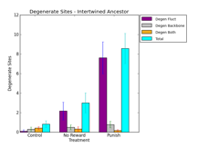
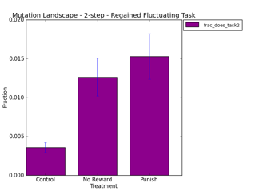

STATUS:
STATUS:
LOG:
STATUS:
rosiec@atlantis:~/research/devolab_research/evolution_of_modularity/raw_data/085$ for i in *.tar.gz; do vals=(`echo $i | tr "." "\n"`); echo ${vals[0]}; done c_i_0 c_i_10 c_i_11 c_i_12 c_i_13 c_i_14 ...
rosiec@atlantis:~/research/devolab_research/evolution_of_modularity/raw_data/085$ for i in *.tar.gz; do vals=(`echo $i | tr "." "\n"`); prepre=(`echo ${vals[0]} | tr "_" "\n"`); dirname=${prepre[0]}_${prepre[1]}; echo $dirname; mkdir $dirname ; cd $dirname ; tar -zxvf ../$i ; cd ../ ; done rosiec@atlantis:~/research/devolab_research/evolution_of_modularity/raw_data/085/c_i/results/c_i$ dirn=`pwd`; prefix=`basename $dirn`; for i in *; do echo $i; cd $i; cat *.txt > ../../../$prefix"_"$i"_mutants.dat" ; cd ../; done
rosiec@atlantis:~/research/devolab_research/evolution_of_modularity/raw_data/085/c_i$ rm mutation_landscape_metrics.csv ; for i in *mutants.dat; do echo $i; python ../../../../scripts/analysis/extract_mutation_landscape_metrics.py --ancestor_task1 $i >> mutation_landscape_metrics.csv ; done
rosiec@Loki:/Volumes/rosiec/research/devolab_research/evolution_of_modularity/raw_data/082/INTERTWINED/last_common_ancestor_mutation_landscapes$ python ../../../../../scripts/graph_generation/bar_chart_from_csv.py --groups 3 --xticks "Control,No Reward,Punish" --columns "3" --legend "frac_does_task2" --pair --title "Mutation Landscape - 1-step - Lost Fluctuating Task" --ylabel "Fraction" --xlabel "Treatment" --separator "," mut_metrics__does_task2.png c*_*/mutation_landscape_metrics.csv n*_*/mutation_landscape_metrics.csv p*_*/mutation_landscape_metrics.csv rosiec@Loki:/Volumes/rosiec/research/devolab_research/evolution_of_modularity/raw_data/085$ python ../../../scripts/graph_generation/bar_chart_from_csv.py --groups 3 --xticks "Control,No Reward,Punish" --columns "3" --legend "frac_does_task2" --pair --title "Mutation Landscape - 2-step - Regained Fluctuating Task" --ylabel "Fraction" --xlabel "Treatment" --separator "," mut_metrics__does_task2.png c*_*/mutation_landscape_metrics.csv n*_*/mutation_landscape_metrics.csv p*_*/mutation_landscape_metrics.csv
STATUS:
rosiec@Loki:/Volumes/rosiec/research/devolab_research/evolution_of_modularity/raw_data/085/c_i/results/c_i$ for j in *; do echo $j; cd $j ; for i in *.txt; do python ../../../../../../../scripts/analysis/identify_positions_of_mutational_effect_from_landscaping.py --ancestor_task1 $i > $i"__position_histogram.csv"; done; cd ../ ; done
rosiec@atlantis:~/research/devolab_research/evolution_of_modularity/raw_data/085/c_i/results/c_i$ for j in *; do cd $j; rm combined_position_histograms__does_task2.csv; for i in *position_histogram.csv; do head -2 $i | tail -1 >> combined_position_histograms__does_task2.csv ; done; cd ../; done
rosiec@Loki:/Volumes/rosiec/research/devolab_research/evolution_of_modularity/raw_data/082/INTERTWINED$ for i in *_*_8200*; do echo $i; cd $i; python ../../../../../scripts/graph_generation/draw_map_task__using_lineage_and_alignment.py --output_values_only --task_map --title "na" -v -a map_task 5 6 8 last_common_ancestor.dat data/phenotype/; cd ../; done
rosiec@atlantis:~/research/devolab_research/evolution_of_modularity/raw_data/082/INTERTWINED$ for i in control_*_?????? ; do val=`wc -l $i/last_common_ancestor.dat | cut -f1 -d' '`; if [ $val -gt 0 ] ; then echo $i ; fi ; done | xargs rosiec@atlantis:~/research/devolab_research/evolution_of_modularity/raw_data/082/INTERTWINED$ files=( ...whatever the output of the prev command was ...) rosiec@atlantis:~/research/devolab_research/evolution_of_modularity/raw_data/082/INTERTWINED$ len=${#files[@]}; for (( i=0; i<${len}; i++)) ; do cp ${files[i]}/task_map__map_task__values_only.csv last_common_ancestor_mutation_landscapes/control_intertwined/ancestor_$i"__task_map.csv" ; done
rosiec@atlantis:~/research/devolab_research/evolution_of_modularity/raw_data/085/c_i/results/c_i$ for i in *; do cd $i; python ../../../../../../../scripts/common/aggregate_file.py --sum -s "," combined_position_histograms__does_task2.csv > summed_position_histograms__does_task2.csv ; cd ../; done
rosiec@Loki:/Volumes/rosiec/research/devolab_research/evolution_of_modularity/raw_data/085/c_i/results/c_i$ for i in *; do echo $i; cd $i; python ../../../../../../../scripts/graph_generation/plot_by_site_functional_landscape.py --title "2-Step Mutations Regaining Lost Task2 - control_intertwined $i" functional_landscape.png summed_position_histograms__does_task2.csv ../../../../../082/INTERTWINED/last_common_ancestor_mutation_landscapes/control_intertwined/ancestor_$i"__task_map.csv" ; cd ../; done
STATUS:
rosiec@Loki:/Volumes/rosiec/research/devolab_research/evolution_of_modularity/raw_data/082/SEPARATED$ for i in *_*_8200*; do echo $i; cd $i; python ../../../../../scripts/graph_generation/draw_map_task__using_lineage_and_alignment.py --output_values_only --task_map --title "na" -v -a ../deleteme 5 6 8 last_common_ancestor.dat data/phenotype/; cd ../; done > last_common_ancestors.txt rosiec@Loki:/Volumes/rosiec/research/devolab_research/evolution_of_modularity/raw_data/082/SEPARATED$ head last_common_ancestors.txt control_separated_820001 data/phenotype/tasksites.org-2890544.dat control_separated_820002 data/phenotype/tasksites.org-1523674.dat control_separated_820003 data/phenotype/tasksites.org-3826793.dat control_separated_820004 data/phenotype/tasksites.org-2499214.dat control_separated_820005 data/phenotype/tasksites.org-2239533.dat rosiec@Loki:/Volumes/rosiec/research/devolab_research/evolution_of_modularity/raw_data/082/SEPARATED$ for i in *_*_8200*; do echo $i; cd $i; python ../../../../../scripts/graph_generation/draw_map_task__using_lineage_and_alignment.py --output_values_only --lineage_map --title "na" -v 5 6 8 data/lineage.dat data/phenotype/; cd ../; done rosiec@Loki:/Volumes/rosiec/research/devolab_research/evolution_of_modularity/raw_data/082/SEPARATED$ values=(`cat last_common_ancestors.txt`) rosiec@Loki:/Volumes/rosiec/research/devolab_research/evolution_of_modularity/raw_data/082/SEPARATED$ for line in ${values[@]}; do echo; testbit=`echo $line | cut -d "_" -f2`; echo $testbit; if [ $testbit = "separated" ]; then parentdir=$line; else testbit=`echo $line | cut -d "-" -f2`; testbit=`echo $testbit | cut -d "." -f1`; filename=lineage_map__tasksites.org-$testbit.dat.png__values_only.csv; cp $parentdir/$filename last_common_ancestor_mutation_landscapes/$parentdir"_"$filename; fi; done
rosiec@Loki:/Volumes/rosiec/research/devolab_research/evolution_of_modularity/raw_data/082/SEPARATED/last_common_ancestor_mutation_landscapes/control_separated$ val=0; for i in *8200*; do echo $i; echo $val; mv $i ancestor_$val"__lineage_map.csv"; let "val=$val+1"; done
rosiec@Loki:/Volumes/rosiec/research/devolab_research/evolution_of_modularity/raw_data/082/SEPARATED/last_common_ancestor_mutation_landscapes$ python ../../../../../scripts/graph_generation/bar_chart_from_csv.py --groups 3 --xticks "Control,No Reward,Punish" --columns "3" --legend "frac_does_task2" --pair --title "Mutation Landscape - Separated Ancestor 1-step - Lost Fluctuating Task" --ylabel "Fraction" --xlabel "Treatment" --separator "," mut_metrics__does_task2.png c*_*/mutation_landscape_metrics.csv n*_*/mutation_landscape_metrics.csv p*_*/mutation_landscape_metrics.csv rosiec@Loki:/Volumes/rosiec/research/devolab_research/evolution_of_modularity/raw_data/085$ python ../../../scripts/graph_generation/bar_chart_from_csv.py --groups 3 --xticks "Control,No Reward,Punish" --columns "3" --legend "frac_does_task2" --pair --title "Mutation Landscape - Separated Ancestor 2nd-step - Regained Fluctuating Task" --ylabel "Fraction" --xlabel "Treatment" --separator "," mut_metrics__does_task2__separated_ancestor.png c_s/mutation_landscape_metrics.csv n_s/mutation_landscape_metrics.csv p_s/mutation_landscape_metrics.csv
rosiec@Loki:/Volumes/rosiec/research/devolab_research/evolution_of_modularity/raw_data/085/c_i/results/c_i$ for i in *; do echo $i; cd $i; python ../../../../../../../scripts/graph_generation/plot_by_site_functional_landscape.py --title "2-Step Mutations Regaining Lost Task2 - control_intertwined $i" functional_landscape.png summed_position_histograms__does_task2.csv ../../../../../082/INTERTWINED/last_common_ancestor_mutation_landscapes/control_intertwined/ancestor_$i"__lineage_map.csv" ; cd ../; done
STATUS:
rosiec@atlantis:~/research/devolab_research/evolution_of_modularity/raw_data/082/INTERTWINED$ for i in *_*_8200*; do echo $i; cd $i; mkdir task_mappings; cd task_mappings; python ../../../../../../scripts/analysis/extract_task_mappings.py --lineage_map -v 5 6 8 ../data/lineage.dat ../data/phenotype/; cd ../../; done
Now to extract the last common ancestors.
rosiec@Loki:/Volumes/rosiec/research/devolab_research/evolution_of_modularity/raw_data/082/INTERTWINED$ values=(`cat last_common_ancestors.txt`) rosiec@Loki:/Volumes/rosiec/research/devolab_research/evolution_of_modularity/raw_data/082/INTERTWINED$ for line in ${values[@]}; do echo; testbit=`echo $line | cut -d "_" -f2`; echo $testbit; if [ $testbit = "intertwined" ]; then parentdir=$line; else testbit=`echo $line | cut -d "-" -f2`; testbit=`echo $testbit | cut -d "." -f1`; filename=lineage_map__tasksites.org-$testbit.dat__values_only.csv; ls $parentdir/task_mappings/$filename ; cp $parentdir/task_mappings/$filename last_common_ancestor_mutation_landscapes/$parentdir"_"$filename; fi; done
rosiec@atlantis:~/research/devolab_research/evolution_of_modularity/raw_data/082/INTERTWINED/last_common_ancestor_mutation_landscapes$ type="noreward_intertwined"; for i in $type"_"82*; do fln=`cat $i | grep -o "12" | wc -l`; bbn=`cat $i | grep -o "13" | wc -l`; flbbn=`cat $i | grep -o "14" | wc -l`; tot=`expr $fln + $bbn + $flbbn`; echo $fln","$bbn","$flbbn","$tot ; done > $type"_degenerate_site_count.csv"
rosiec@Loki:/Volumes/rosiec/research/devolab_research/evolution_of_modularity/raw_data/082/INTERTWINED/last_common_ancestor_mutation_landscapes$ python ../../../../../scripts/graph_generation/bar_chart_from_csv.py --ylim_max 12 --groups 3 --xticks "Control,No Reward,Punish" --columns "1,2,3,4" --legend "Degen Fluct,Degen Backbone,Degen Both,Total" --pair --title "Degenerate Sites - Intertwined Ancestor" --ylabel "Degenerate Sites" --xlabel "Treatment" --separator "," degenerate_sites.png c*_degenerate_site_count.csv n*_degenerate_site_count.csv p*_degenerate_site_count.csv
 
rosiec@Loki:/Volumes/rosiec/research/devolab_research/evolution_of_modularity/raw_data/082/SEPARATED/last_common_ancestor_mutation_landscapes$ type="control_separated"; paste -d "," $type"_"degenerate_site_count.csv $type/mutation_landscape_metrics.csv > $type"__"combined_degenerate_site_and_mutation_landscape_metrics.csv
> summary(ancova.lm.fullmodel.sep.1step.bytreatment)
Call:
lm(formula = does_fluct_1step ~ treatment * fluct_degen_sites,
data = separated.data)
Residuals:
Min 1Q Median 3Q Max
-0.52630 -0.03531 0.01374 0.04812 0.18066
Coefficients:
Estimate Std. Error t value Pr(>|t|)
(Intercept) 0.6528703 0.0156129 41.816 < 2e-16 ***
treatmentnoreward -0.0140984 0.0223225 -0.632 0.52878
treatmentpunish -0.0824104 0.0300988 -2.738 0.00706 **
fluct_degen_sites -0.0099786 0.0187892 -0.531 0.59628
treatmentnoreward:fluct_degen_sites 0.0009349 0.0201038 0.047 0.96298
treatmentpunish:fluct_degen_sites 0.0036693 0.0190597 0.193 0.84764
---
Signif. codes: 0 ‘***’ 0.001 ‘**’ 0.01 ‘*’ 0.05 ‘.’ 0.1 ‘ ’ 1
Residual standard error: 0.0939 on 129 degrees of freedom
Multiple R-squared: 0.2789, Adjusted R-squared: 0.251
F-statistic: 9.98 on 5 and 129 DF, p-value: 4.33e-08
> summary(ancova.lm.fullmodel.sep.2step.bytreatment)
Call:
lm(formula = does_fluct_2step ~ treatment * fluct_degen_sites,
data = separated.data)
Residuals:
Min 1Q Median 3Q Max
-0.010248 -0.004318 -0.001146 0.001898 0.081224
Coefficients:
Estimate Std. Error t value Pr(>|t|)
(Intercept) 0.0037012 0.0016130 2.295 0.02341 *
treatmentnoreward 0.0036794 0.0023062 1.595 0.11311
treatmentpunish 0.0097010 0.0031960 3.035 0.00292 **
fluct_degen_sites -0.0003333 0.0019411 -0.172 0.86395
treatmentnoreward:fluct_degen_sites 0.0012808 0.0020770 0.617 0.53858
treatmentpunish:fluct_degen_sites 0.0004877 0.0019699 0.248 0.80486
---
Signif. codes: 0 ‘***’ 0.001 ‘**’ 0.01 ‘*’ 0.05 ‘.’ 0.1 ‘ ’ 1
Residual standard error: 0.009701 on 126 degrees of freedom
(3 observations deleted due to missingness)
Multiple R-squared: 0.1876, Adjusted R-squared: 0.1553
F-statistic: 5.819 on 5 and 126 DF, p-value: 7.198e-05
> summary(ancova.lm.fullmodel.int.1step.bytreatment)
Call:
lm(formula = does_fluct_1step ~ treatment * fluct_degen_sites,
data = intertwined.data)
Residuals:
Min 1Q Median 3Q Max
-0.57409 -0.03049 0.01221 0.04154 0.21531
Coefficients:
Estimate Std. Error t value Pr(>|t|)
(Intercept) 0.687592 0.013649 50.377 <2e-16 ***
treatmentnoreward -0.028955 0.022184 -1.305 0.194
treatmentpunish -0.036181 0.026664 -1.357 0.177
fluct_degen_sites 0.004791 0.027911 0.172 0.864
treatmentnoreward:fluct_degen_sites -0.012431 0.028335 -0.439 0.662
treatmentpunish:fluct_degen_sites -0.017072 0.028020 -0.609 0.543
---
Signif. codes: 0 ‘***’ 0.001 ‘**’ 0.01 ‘*’ 0.05 ‘.’ 0.1 ‘ ’ 1
Residual standard error: 0.09026 on 129 degrees of freedom
Multiple R-squared: 0.3744, Adjusted R-squared: 0.3501
F-statistic: 15.44 on 5 and 129 DF, p-value: 6.964e-12
> summary(ancova.lm.fullmodel.int.2step.bytreatment)
Call:
lm(formula = does_fluct_2step ~ treatment * fluct_degen_sites,
data = intertwined.data)
Residuals:
Min 1Q Median 3Q Max
-0.012440 -0.004327 -0.001184 0.003074 0.032851
Coefficients:
Estimate Std. Error t value Pr(>|t|)
(Intercept) 0.0035730 0.0011136 3.208 0.001693 **
treatmentnoreward 0.0093612 0.0018100 5.172 8.86e-07 ***
treatmentpunish 0.0081006 0.0022525 3.596 0.000462 ***
fluct_degen_sites 0.0001927 0.0022773 0.085 0.932696
treatmentnoreward:fluct_degen_sites -0.0003275 0.0023119 -0.142 0.887571
treatmentpunish:fluct_degen_sites 0.0002756 0.0022868 0.121 0.904258
---
Signif. codes: 0 ‘***’ 0.001 ‘**’ 0.01 ‘*’ 0.05 ‘.’ 0.1 ‘ ’ 1
Residual standard error: 0.007364 on 126 degrees of freedom
(3 observations deleted due to missingness)
Multiple R-squared: 0.3501, Adjusted R-squared: 0.3243
F-statistic: 13.58 on 5 and 126 DF, p-value: 1.356e-10
* So, doesn't seem like there is a strong relationship. The R2rs top out at .35 for the 2nd step.
Weekly Status
Last week:
- Previously, I had taken the last common ancestor each of my replicates for each treatment (control, no-reward, and punish), and surveyed the single-step mutation landscapes. I calculated the fraction of mutants that LOST the fluctuating task.
Last week, I took each of those mutants, and landscaped those, and calculated what fraction of the second-step mutants REGAINED the fluctuating task.

Clearly, you can see that there are significantly more second-step mutants in no-reward and punish treatments that regain the fluctuating task than in the control.
- Then, I looked at what sites were responsible for regaining the fluctuating task in those mutants that regained the tasks in all treatments.
The pattern is pretty clear. Mutations that regain the task mostly cluster nearby to existing non-overlapping instructions (red, blue) or degenerate sites (light red, light blue, light purple), and avoid overlapping sites. The above figures are for a single replicate, but the pattern holds for most of the replicates.
- Finally, I looked at whether there was a relationship between the number of degenerate sites and the fraction of mutants that regained the task.
Clearly, punish and no-reward have many more fluctuating task degenerate sites than the control. So, I modeled the correlation in R. ( num_regained_fluct_task ~ treatment * num_fluctuating_degenerate_sites)
The model coefficients are only significant for the intercepts (the mean differences between treatments), but not for the slopes (a relationship between the degenerate sites and the number of mutants). The model has an R-squared of .35, so not really great.
This Week:
- In Alberta helping with the Software Carpentry workshop.
- Model some other relationships, including straight correlation between number of degenerate sites and mutants that regained the task (to see if the relationship is independent of treatment).
- From Last Week: Formulate a set of definitive experiments to test evolvability of organisms evolved in the landscape.
- From Last Week: Run Fitness in Changing Environments tournaments to extract relative fitness information.